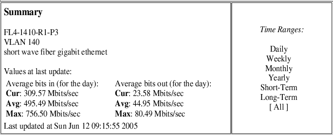
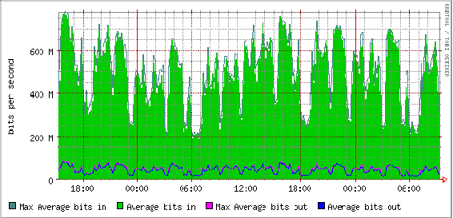
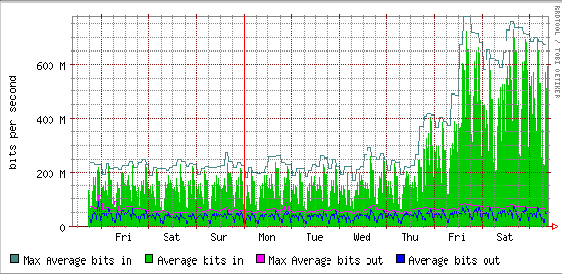

by Tom Yoksas, John Stokes, and Mike Schmidt
June, 2005
The Program Center operates the two level IDD relay nodes, one at the Unidata Program Center offices in Boulder (idd.unidata.ucar.edu also known as thelma.ucar.edu), and one at the ATM offices of NSF in Arlington, Virginia (atm.geo.nsf.gov). The NSF/ATM node represents the class of machine that has long been used in the IDD for relaying high volume datastreams. The machine hosted in Boulder, on the other hand, represents a new approach we are taking towards data relay: it is a cluster composed of a director (a machine that forwards IDD feed requests to other machines) and several data servers (machines that are fed requests by the director) that service data requests. The director relays feed requests to a data server using the the IP Virtual Server (IPVS) facility that is a standard part of the 2.6 kernel in current versions of Linux.
The cluster we have built, depicted in the figure at the right, is currently composed of four Sun SunFire V20Z 1U rackmount servers. All of the machines are identically configured with dual 2 Ghz AMD Opteron processors, two 36 GB 10K RPM SCSI hard disks, dual Gbps Ethernet interfaces, and each runs the 64-bit version of Fedora Core 3 (FC3) Linux. The director is configured with 4 GB of RAM, and the data servers are each configured with 12 GB of RAM. The cost of these machines was modest: $3000 for the director and $4800 for each data server; all were purchased under a Sun educational discount program. These SunFire V20Z machines have proven to be stellar performers as IDD data relays.
We plan to replace the V20Z director with redundant Dell PowerEdge 2850 rackmount servers which are less costly (approx. $2200) since that they have much less memory. directors do not need to be nearly as well configured as the data servers in processing power or memory.
We chose 64-bit FC3 Linux after head-to-head comparisons of three operating systems (OS) running on identical hardware. The other OSes tested were Sun Solaris x86 10 and FreeBSD 5.3. All three OSes tested are 64-bit. In our testing, FC3 emerged as the clear winner; FreeBSD was second; and Solaris x86 10 was a distant third.
Since we have learned a great deal about how to maximize the relay performance of the data servers during our last three months of testing, we plan to revisit use of Sun Solaris x86 10, FreeBSD 5.3, and try the newly released 64-bit Fedora Core 4 version of Linux.
As indicated earlier, the cluster is seen as one machine, the director, idd.unidata.ucar.edu, to the outside world. This machine is running IPVS along with LDM 6.3.0 configured to run on a second Ethernet interface (different IP address). The IPVS director forwards port 388 requests to the data servers each of which are configured to be known internally as idd.unidata.ucar.edu. Since the data servers do not ARP, they are not seen as idd.unidata.ucar.edu by the outside world. The IPVS software keeps track of how many IDD feed connections are active on each of the data servers and "load levels" based on the number of those connections. We will be experimenting with load leveling approaches other than numbers of connections (e.g., weighted average of system load on each box) as we continue our experimentation. Since the data servers are configured identically: same RAM, same LDM queue size (8 GB currently), same ldmd.conf contents, etc., the expectation is that machines will receive the same data regardless of which node is feeding them.
Currently, all connection requests from a downstream machine are sent to the same data server as long as the downstream's last successful connection did not terminate more than one minute prior to the new request. This setup allows downstream LDMs to send "are you alive" queries to the same server that they have not received data from in the past minute. Once there have been no feed requests by a downstream host for one minute, new requests will be forwarded to the data server that is servicing the fewest number of connections.
This cluster design allows us to take down any of the data servers for whatever maintenance is needed (hardware replacement, software upgrades, etc.) whenever we need to make changes. When a data server goes down or is taken offline, the IPVS server is automatically informed that the server is no longer available, and all downstream feed requests are sent to the other active data servers.
In one test setup, we operated two directors, thelma.ucar.edu and idd.unidata.ucar.edu, located on different LANs within UCAR, and had both directors sent feed requests the same set of data servers. The success of this experiment has left us with the expectation that a large "virtual machine" composed of geographically distributed directors and data servers could be constructed (with appropriate cooperation of IT groups in charge of the various LANs involved). We plan to further explore this possibility after we identify university Unidata community members that would like to participate in distributed testing.
The cluster currently relays an average of 130 Mbps (~1.4 TB/day) to approximately 215 downsteam connections. Peak relay rates routinely exceed 250 Mbps (2.7 TB/day).
Stress testing the cluster using two data servers have lead us believe that we could field literally every IDD feed request in the world if needed thus creating an "ultimate" failover site. The beauty of the cluster approach is if the load on the data servers ever becomes too high, all we need do is add one or more additional boxes to the mix.
During a recent 3 day stress test (figures below), we were able to push an average of 500 Mbps (5.4 TB/day) of data to downstreams without introduction of latency. Since the director and data servers were essentially idling during this test, we believe that, if necessary, we could push rates up to the limit of our 1 Gbps LAN and routers.
Below are some graphics depicting our 3 day stress test.



{kind=link}